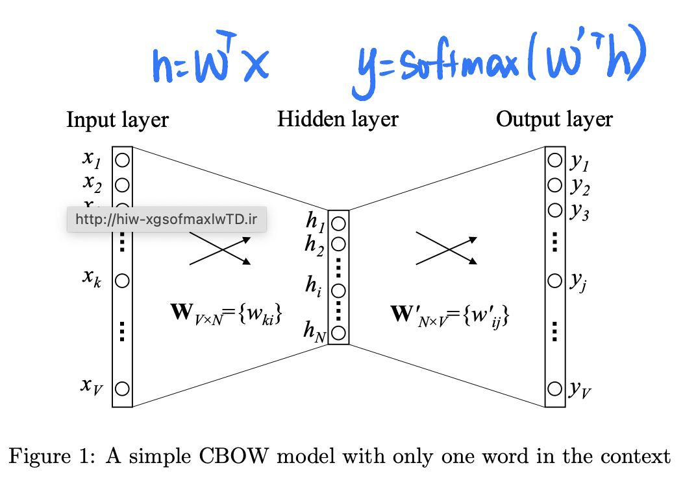

Word Representation¶
Word Stemming，词干抽取 将不同词性、形态的单词统一成为同一词干的形式
graph LR
A[Word Representation]
B[BagofWords]
C[WordEmbedding]
D[Word2vec]
E[CBOW]
F[Skip-gram]
G[N-gram]
H[Topic Model]
A -.- B
A -.- C
C -.- D
D -.- E
D -.- F
A -.- G
A -.- HTFIDF¶
理解：
- TF：如果一个词在这篇文章中出现很多次，那么它可能是这篇文章的关键词
- IDF：如果一个词在很多文章中里都出现，那么它可能是一个比较通用的词
词袋模型 Bag of Words¶
维度是词袋的大小，独热编码 单纯用词袋模型 Binary vector 是行不通的： 1. 过于高维，几十万的词就得有几十万的维度 2. 过于傻瓜，不能通过 向量的数值 体现更多的信息 3. 过于依赖，未出现在词袋的词不能表示
N-gram¶
连续出现的n个词组成的词组 as 一个单独的特征
Topic Model¶
每个主题上面词的分布特性），并且能够计算出每篇文章的主题分布
Word Embedding¶
与全连接的网络结构相比，卷积神经网络和循环神经网络一方面很好地抓住了文本的特性，另一方面又减少了网络中待学习的参数，提高了训练速度，并且降低了过拟合的风险。
a word embedding is a representatin of a word. 将文本映射到数学空间中，以向量的形式可以保留其语义, 旨在用向量的运算推导出语义。 将每个词都映射成低维空间（通常K=50～300维）上的一个稠密向量。
'King' - 'Man' + 'Woman' = 'Queen'
Background¶
不仅是本义相似要在一块，高度相关的也要在一块
words that are closer in the vector dpace are expected to be similar(cosine) in meaning
Word Similarity 相似 & Linguistic Relationships 相关
- Word Similarity ～ Synonyms 讲究同义，相似意义，可以替换而不影响本义
- Linguistic Relationships 侧重相关，不能替换 |relationship|example| |--|--| 父子级 | 法国-巴黎 反义|正-负
Algorithm¶
个人理解
过程类似于：学习一个抽象词比如高兴，一开始并不确切知道是什么，但是当读完很多篇文章，标为积极的情感的文章大部分有它，标为消极的文章确很少有它。此时大概能摸索出高兴属于积极的一类词，它语义的某一部分组成就是积极。
通过下游任务来确定词义 \(\implies\) 不同的下游任务将决定词义的获得
word2vec 的下游任务，就是预测附近的词
Word2Vec¶
实际的 word2vec 就是一个==三层神经网络==
网络层(#神经元)：输入层\((V)\xrightarrow{W\in[V\times N]}\) 隐藏层\((N)\xrightarrow{W'\in[N\times V]}\) 输出层 \((V)\)

训这样一个带一个隐藏层的NN是为了 这个==下游任务prediction task==， 但目的其实是要学这个 word embedding = 隐藏层的权重
理解： 模型中的每个隐层都可以认为对应着不同抽象层次的特征，抽取出一些高层的语义特征
one-word context (最简单来说明)¶
通过 back propagation 使得 同在一个场景（也就是真实数据集所给的 pairs）的词语向量相似度会接近, similarity between word vector pairs，\(\lrArr N\) 维空间中，相关性高的词语会靠近，相关性低低词语会相互远离。
\(\cfrac{\partial \text{loss}}{\partial W'}\implies\nabla W'_j\approx\begin{cases}-h=-W_I&j\neq j^*\\+h=+W_I&j=j^*\end{cases}\lrArr\) 一个输入对不同输出(相关性高和相关性低)的影响
\(\cfrac{\partial\text{loss}}{\partial W_i}\implies\nabla W_i=\begin{cases}0&i\neq I\\\sum e_jW'_j&i=I\end{cases}\lrArr\) 不同的输出对一个输入的拉扯
同时，经过很多轮 iterations 使得 一个词 在不同场景下的语义进行“加权组成”

{kind=link}
{kind=link}
{kind=link}
{kind=link}
{kind=link}
| CBOW | Skip-gram | |
|---|---|---|
| Same | Word2vec,浅层的神经网络 | < |
| 目标 | 根据上下文出现的词语 预测当前词的生成概率 |
根据当前词 预测上下文中各词的生成概率 |
| 网络结构 | 1->N | N->1 |
CBOW, Continues Bag of Words n➡️1¶
相较于one-word context
- input = 所有输入单词的平均 ⬅️ 只有一个输入的单词
Skip-Gram 1➡️n¶
 skip-gram 的输出个数固定吗？
skip-gram 的输出个数固定吗？- 用同一个\(W'\)怎么能输出 C multi- distribution 的结果？
Q&A¶
通过 Q&A 再次梳理关系，基于 one-word context
- 为什么隐藏层的参数矩阵 \(W\) 就是 word vector = word embedding？
从 input 和 target output来看：
- input \(x\) 是一个 binary vector，只有 given word(在词袋的索引是\(I\) )是 1， 其余的都是 0。 \(\implies h=W^Tx\), 只有 \(W^T\)的一列 = \(W\)的一行 = \(W_I\) 是有用的 \(\implies h=W_I\) ，传入模型的 就只有第 \(I\) 那么一个词，也就 参数矩阵 \(W\) 第 \(I\) 行 \(W_I\)那么一个向量。 所以非常自然地， \(\text{word}_I\lrArr W_I\implies \text{words}_{in}\lrArr W_{in}\)
- target output \(\hat{y}\) 同样是一个 binary vector，只有 target word(在词袋的索引是\(j^*\)) 是 1， 其余都是 0。（和前面类似）
\(\implies \hat{y}=\text{softmax}(W'^Th)\rightarrow{\text{理想情况}}\begin{cases}\hat{y}_{j^*}=y_{j^*}=1\lrArr W'^T_{j^*}h=1&j= j^* \\\hat{y}_j=y_j=0\lrArr W'^T_jh=0&j\neq j^* \end{cases}\)
\(\implies\) 输出模型的 就只有第 \(j^*\) 那么一个词，除去代表输入词 的\(h=W_I\), 也就 参数矩阵 \(W'\)第 \(j^*\)列 \(W'^T_{j^*}\)那么一个向量参与到运算。
所以非常自然地， \(\text{word}_{j^*}\lrArr W'^T_{j^*}\implies \text{words}_{out}\lrArr W'^T_{out}\)
- 输入和输出同是一个词袋，所以经过这个训练，同时==有两种不同==的嵌入
- 为什么不看 output？ 、
因为 output 的值还跟模型能力有关。target output 更能体现理论上的设计。
- 为什么 \(W\),\(W'\) 不一样
- \(h=W_I\)，输入完全由 \(W_I\)组成；
- 为什么要扔掉
contex matrix，只要matirx？ 其实选择 \(W\)还是\(W'\)作为 word embedding matrix 都是个人选择。 \(W\) ✅， \(W'\) ✅， \(\cfrac{W+W'}{2}\) ✅ ... - 为什么
一些trciks¶
Hierarchical Softmax¶
Negative Sampling¶
数据集不应该只有 正确的 ‘A\(\rightarrow\)B’， ‘B\(\rightarrow\)C’，应该还有 ‘A\(\nrightarrow\)D‘,‘A\(\nrightarrow\)E‘
{kind=link}